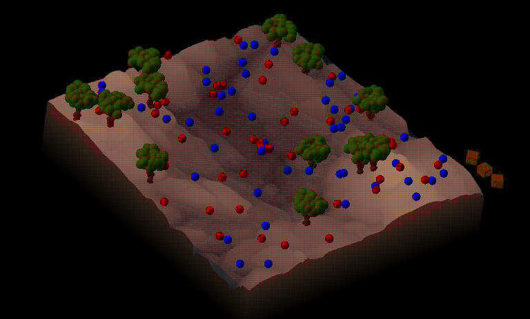
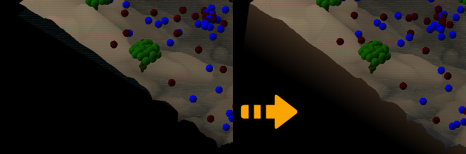
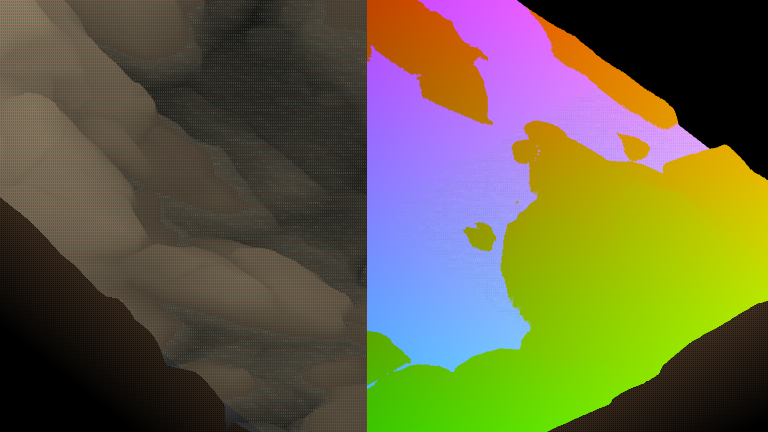

The origin of this project is the CS 4250 Intro to Interactive Computer Graphics class I took as a senior tech elective with Dr. Chelberg my last semester at Ohio University. The assignment was as follows: you are to make a game in which the goal is to get food/supplies to good guys, while avoiding bad guys. There has to be some kind of obstacle for them, and if bad guys get the food/supplies first they are captured and the good guys can’t get them. Beyond the very general direction, we were given largely free reign to define the rest of the project as we wished.
Around this time, I had done a few small OpenGL examples that dealt with textures – this is an incredibly powerful feature of graphics APIs, in that you have a potentially very large chunk of image data that can be accessed in different ways, filtered, etc. They are accessed in GLSL using uniform sampler objects, which are either specified with layout qualifiers or they get a number from the CPU identifying what texture unit holds the data associated with that identifier. This ‘uniform’ keyword has some of the same implications of something being called ‘global’ in that it is possible to access it from multiple different places in the pipeline and this really creates a lot of flexibility as far as getting data to the GPU.
My notion was this: if you can access, for example, a heightmap in your vertex shader, would it be practical to displace verticies with this height data? Moving forward with this, I found that, yes, it worked exactly as I thought – you have the same kind of access you would in a fragment shader, using this texture sampler – this opened up a lot of new potential.
REPRESENTATION
As I’ve just alluded to, the ground was drawn based on a bunch of triangles making up a square section of a plane – each of the verticies are vertically displaced based on a texture read at their X,Y coordinates, and colored based on vertical position in order to visually distinguish because there is only very basic shading going on. At some vertical level, which makes sense to call ‘sea level’, there’s another square section that spans the same part of the plane – the vertical offsets here were all set to be at sea level (+/- a little bit of a vertical offset for a smaller texture representing the height of the waves) so that it would be displayed over sections of ground that were lower, and it would be occluded by sections of ground that had a greater vertical displacement.
After implementing this, I was not pleased with how the water was visible at the edges, where you could see under the surface of the ground. To solve this, I came up with a notion of skirts which would be a series of vertical triangles made into quads that just go around the edges and make sure you can’t see underneath, giving it a more solid look. There are really only two cases to worry about – when the texture read at that point on the edge is above sea level, and when it is below sea level. When it is above sea level, you simply fill those triangles in with the same gradient that’s being used to accentuate the height of the rest of the land. In the case where you are dealing with ground lower than sea level, you will require some amount of those quads to look like water, as you are able to see as if someone had just cut this square directly out of a landscape and put glass sides around it.
The good guys, bad guys and trees shared a texture, which was just a low resolution heightmap of a spherical bump (64 x 64px) that I mapped to a point using gl_PointCoord.xy – I tried to do some basic lighting on them with some limited success. When these good guys/bad guys/trees are drawn the same vertical displacement logic is applied, using the ground texture – here it is to set the vertical position of each of these characters/obstacles with relation to the ground level itself (if they stayed at some given height, they would be floating over some ground and clipping under other ground). Trees are just a series of these textured points that are arranged using std::random during the program’s initialization and then drawn at the trees’ locations. A similar scheme was used for the supply drops but the points were arranged into a little cube shape.

GAMEPLAY
When the program is launched, there is a default set of arguments which define how many good guys, bad guys, trees and supply drops that are available. It is also possible to specify this by calling the executable with 4 integer arguments that tell how many of each to use. Good guys, bad guys and trees are sprinkled around the square randomly during this initialization step, and then the game starts.

On each frame update, each of the good guys and bad guys’ positions are computed from a number of different influences. Firstly, they are always jiggled by some small random amount, and vertically offset by a tiny amplitude sinusoid (to give it a little bit of a bounce). If there is an unclaimed supply drop on the board, it will move towards the closest one, in addition to this random offset. For each character, they look at which of the trees are the closest to it, and if it is within a certain radius (the trunk) they are pushed away from that tree, so this serves as a bit of an obstacle, and they flow around it. If they have managed to get themselves out of bounds by this point (outside of the square) their position is updated at the center of the square and the same behavior continues.
If a character is within a certain radius of a supply drop on an update, they will gather that supply drop, deactivate it, and score a point for their team. This happens the exact same way for both good and bad guys. Winning or losing was determined when you were out of supply drops – whoever had more points, wins (good or bad guys).
The placement of the supply drops was an interesting problem to solve – I implemented a color-based selection scheme which would be triggered every time that a left click mouse event was received. The screen is cleared, then the ground is re-rendered – when it is, though, it is not using the same gradient as the normal display uses – here it is using the red channel to represent the x location of that fragment on the board, the green channel to represent the y location of that fragment on the board, and the blue channel was used basically as a boolean to tell whether or not your fragment was ‘underwater’. Once this is rendered, a color sample is taken from the back buffer where this has just been drawn, and placement decisions are based on X, Y, and whether or not you’re in the water. Following this, the scene is simply drawn again, never swapping the selection color render to the front buffer, so that the user never sees this colored representation during normal gameplay.
The placement rules required that the placement of a supply drop fit a number of criteria – it had to be in the bounds of the board (not a black pixel), it had to be above water (blue channel read not equal to zero) and it also had to be a certain distance from the nearest tree. Invalid placement was handled a couple different ways, for the off-board placement, I went with just allowing the user to try again, the second gave a message that you had lost your supplies in the water, and the third gave a message that your supplies had been caught in a tree. If the placement of this supply crate was too close to a good guy or bad guy, you’d get a message saying ‘aw jeez man, you killed a good/bad guy’ as the case was. This good or bad guy was removed from the set of points allowed to move, and it was then represented as a black point just sitting where it had died. If you hit the ‘g’ key while playing, this radius would grow and you could take out chunks of multiple good/bad guys at once.

This exercise, to make a game, with a win condition and some interesting emergent behavior, was exciting and I really enjoyed it. Not quite simulation, but I really liked the way that you could get the mass of little guys to start grouping up and appearing to flow over the surface geometry and around the models of trees. In the near future I want to port it to SDL to make it more practical to get running on other systems - currently it uses GLUT. I’ve done two different programs now, converting from GLUT to SDL2 as a windowing/event handling utility, and it’s relatively straightforward - I do very much like SDL’s system of events.